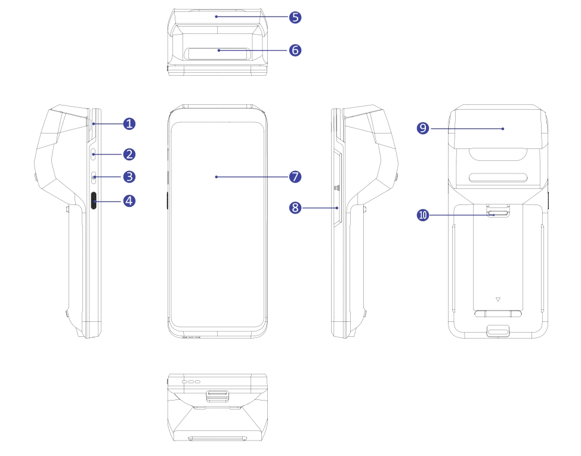

Диагностика неисправностей
Выберите проблему:
Регламентные работы
Здесь будет информация о регламентных работах.
Справочная информация
Что такое Эвотор?
Смарт-терминал «Эвотор» — это онлайн-касса, которая помогает автоматизировать ваш бизнес. Вот что он умеет:
- Осуществлять торговые операции: продажи, инвентаризацию, приемку, возвраты покупателю и поставщику, списание;
- Управлять списком товаров;
- Загружать новые товары из базы Эвотора и не только;
- Формировать кассовые отчёты;
- Формировать и отправлять на электронную почту управленческие отчёты;
- Принимать к оплате наличные, а в полной версии устройства — банковские карты и любые виды бесконтактных платежей;
- Работать с ЕГАИС и маркировкой и многое другое!
Если хотите большего — установите приложение из Эвотор.Маркета.
Как выглядит Эвотор?
Вот основные элементы смарт-терминала Эвотор:

- Паз с магнитной головкой — при оплате картой с магнитной полосой поместите карту в данный паз, магнитной полосой вниз, и проведите картой слева-направо вдоль магнитной головки, чтобы терминал мог считать данные карты.
- Разъём USB type-C — к данному разъёму можно подключить периферийные устройства или кабель с блоком питания для зарядки аккумуляторной сборки.
- Кнопка питания — удерживайте данную кнопку нажатой в течение 3-х секунд, чтобы включить/выключить или перезагрузить терминал.
- Кнопка управления сканером — нажмите однократно на эту кнопку, чтобы активировать модуль сканера, затем наведите прицелом сканера на штрихкод и нажмите данную кнопку ещё раз, чтобы модуль сканера считал штрихкод.
- Печатающий механизм — осуществляет печать чеков на чековой ленте.
- Модуль сканера — осуществляет считывание любых штрих-кодов.
- Дисплей устройства с сенсорным экраном — позволяет управлять терминалом посредством касаний экрана.
- Считыватель банковских карт — при оплате картой с чипом поместите карту в считыватель так, чтобы чип карты оказался внутри корпуса устройства, в этом случае данные карты будут прочитаны терминалом.
- Антенна NFC — при оплате картой бесконтактным способом поднесите к данному месту карту, чтобы терминал смог считать её данные.
- Кольцо для ремня — таких колец на корпусе терминала два, вы можете продеть в них специальный ремень, чтобы зафиксировать устройство на руке.